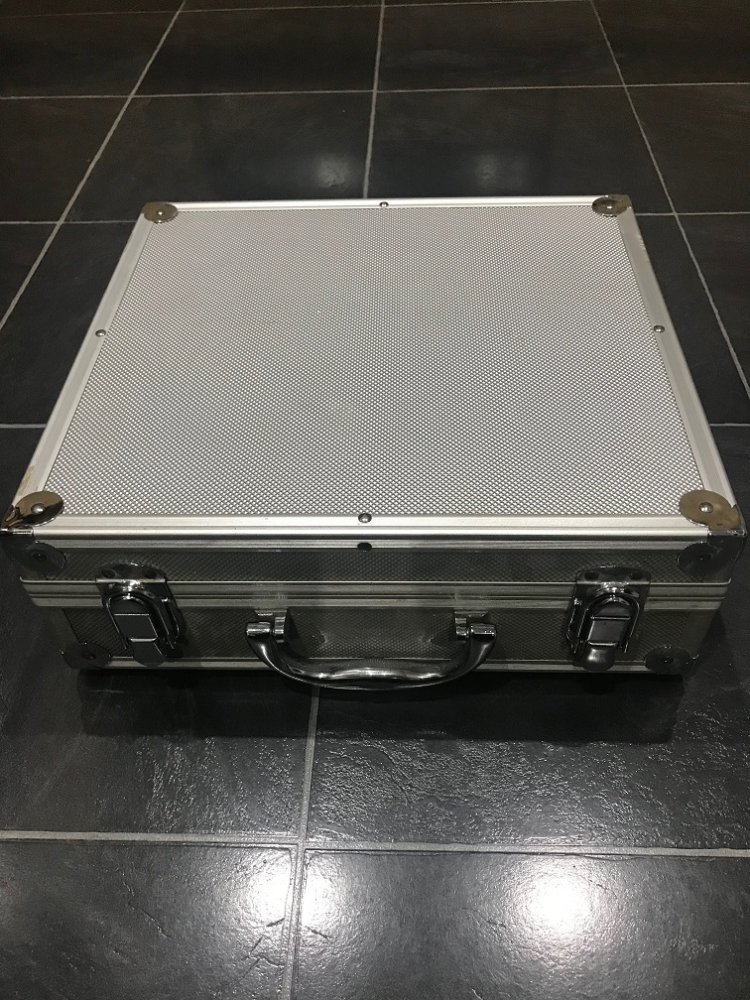
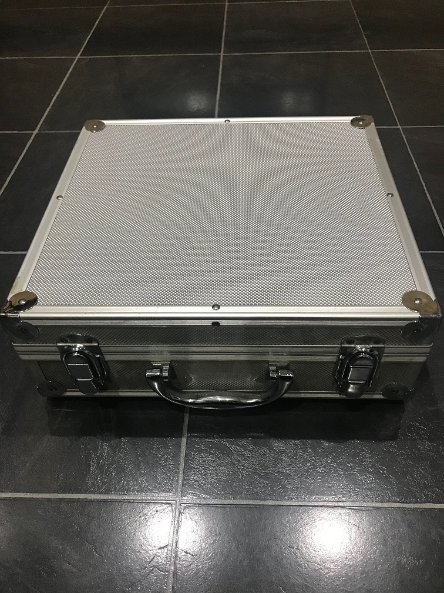

Mobile Raspberry Pi Project
On my days off my wife occasionally does freelance work in Redditch for up to 5 hours, so I wanted to be able to use a Raspberry Pi
whilst away from home. I do have a windows 10 laptop and do take it with me but I prefer to code on my Raspberry Pi.
I made it possible to
run via a mains adapter or to be battery operated for over 5 hours, I decided to use 2x 12V 7Amp batteries rather than just the one in my old
setup.
In my current setup pictured left I'm using a USB sata drive 160Gb instead of using the sd card for the Raspbian operating system.
I bought a display driver board which is behind the 10" screen, the board also powers the speakers which are just above the screen. On the right
of the screen is the buttons for the driver board volume etc. I use a wireless keyboard and mouse so that I can move around a bit without all
the wires.
The 2x led voltage displays to the left of the Pi is left for PSU or Battery and the right is for the yellow crocodile clip so I
can test voltages on the GPIO's or on breadboard parts etc. Just to the right of the voltage displays is where the voltage step down is set to 5v
which is adjustable and can power up to 3Amps.
I like to take things apart unused or broken goods to reuse bits and so in this kit is
recycled parts from old laptops like the screen, speakers and 160Gb hdd.
Mouse over the pictures below for more information

 
